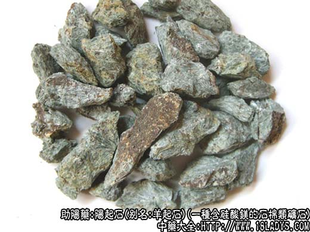

别名：羊起石。
来源：为一种含硅酸镁的石棉类矿石。常见于各种变质岩中。
产地：主产于湖北、河南、山东、山西、河北、四川等地。
性状鉴别：本品呈不规则的条块状，大小不一。全体黄白色，青白色至青灰色，为纤维状结构。表面纤维状纹理，具光泽。体重，质松软，易剥离，断面不整齐，纵向破开呈丝状，柔软而光滑。气无，味淡。以黄白色，纤维状，质柔软，易撕碎者为佳。
主要成分：含硅酸镁、硅酸钙等。
功效与作用：壮阳温肾，兴奋性机能。
炮制：生用。
性味：甘，温。
归经：入肾经。
功能：温肾壮阳。
主治：下焦虚寒，阳痿，遗精早泄，子宫寒冷不孕，腰膝酸软，崩漏等症。
临床应用：治性机能衰退、阳痿、遗精、早泄、子宫虚寒，兼有腰膝冷痹等肾虚症状。常配其他助阳药，方如阳起石丸。
使用注意：本品只宜暂服，不宜长用。阴虚火旺者勿服。
用量：3~6g，制丸散服，不入煎剂。
处方举例：阳起石丸：阳起石15g，淫羊藿15g，巴戟天15g，仙茅15g，菟丝子15g，锁阳15g，沙苑子15g，共研细末，炼蜜为丸，如梧桐子大，每服9g，每口1~2次，开水或淡盐汤送下。
附：阴起石
来源：为一种短纤维的类矿物。多与阳起石相伴而生。
产地：同阳起石。
性状鉴别：本品为不规则的块状，大小不一。全体呈灰绿色，有光泽、表面光滑而不平坦。质软而酥松，易碎，断面呈层纹状，纵向破开呈针束状，用手可捻成薄鳞片或纤维状粉末附于手上有光滑感。气无，味淡。
炮制：生用或煅用。
效用：同阳起石。
注：1、古代本草记载只阳起石一种。阴起石之名，不知起于何时。
2、商品中阳起石与阴起石，均系石棉类矿石。由于变质岩的种类不同，其色泽与软硬度也不一致。有些地区以黄白者作阳起石，而将灰绿色者即称阴起石，例如，北京、天津、河南等地；有些地区则与此相反，如：湖南、四川、内蒙等地。各随地区习惯。